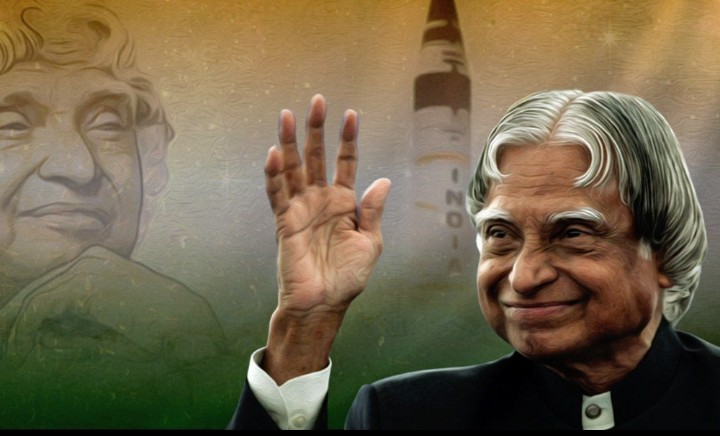

Name: Avul Pakir Jainulabdeen Abdul Kalam (Dr. A.P.J. Abdul Kalam)
Nationality: Indian
Occupation: Engineer, Scientist, Author, Professor, Politician
Born: 15-Oct -1931
Place of Birth: Dhanushkodi, Rameswaram, Tamil Nadu, India
Died: 27 July 2015
Died at the age of 83
Place of Death: Shillong, Meghalaya, India
Famous as: Dr. A.P.J. Abdul Kalam President from 2002 to 2007

A. P. J. Abdul Kalam , The Missile Man and Former President of India
Honorary Degrees
Distinguished Fellow Institute of Directors, India, 1994
Honorary Fellow , National Academy of Medical Sciences, 1995
King Charles II Medal , UK, 2007
Hoover Medal , American Society of Mechanical Engineers, USA, 2009
Doctor of Engineering , University of Waterloo, Canada, 2010
Honorary Doctor of Laws , Simon Fraser University, Canada, 2012
Honorary Doctor of Science , University of Edinburgh, Scotland, 2014
List of Awards
1981: Padma Bhushan , Government of India
1990: Padma Vibhushan , Government of India
1997: Bharat Ratna , Government of India
1997: Indira Gandhi Award for National Integration , Government of India
1998: Veer Savarkar Award , Government of India
2000: SASTRA Ramanujan Prize , Shanmugha Arts, Science, Technology & Research Academy, India
2013: Von Braun Award , National Space Society